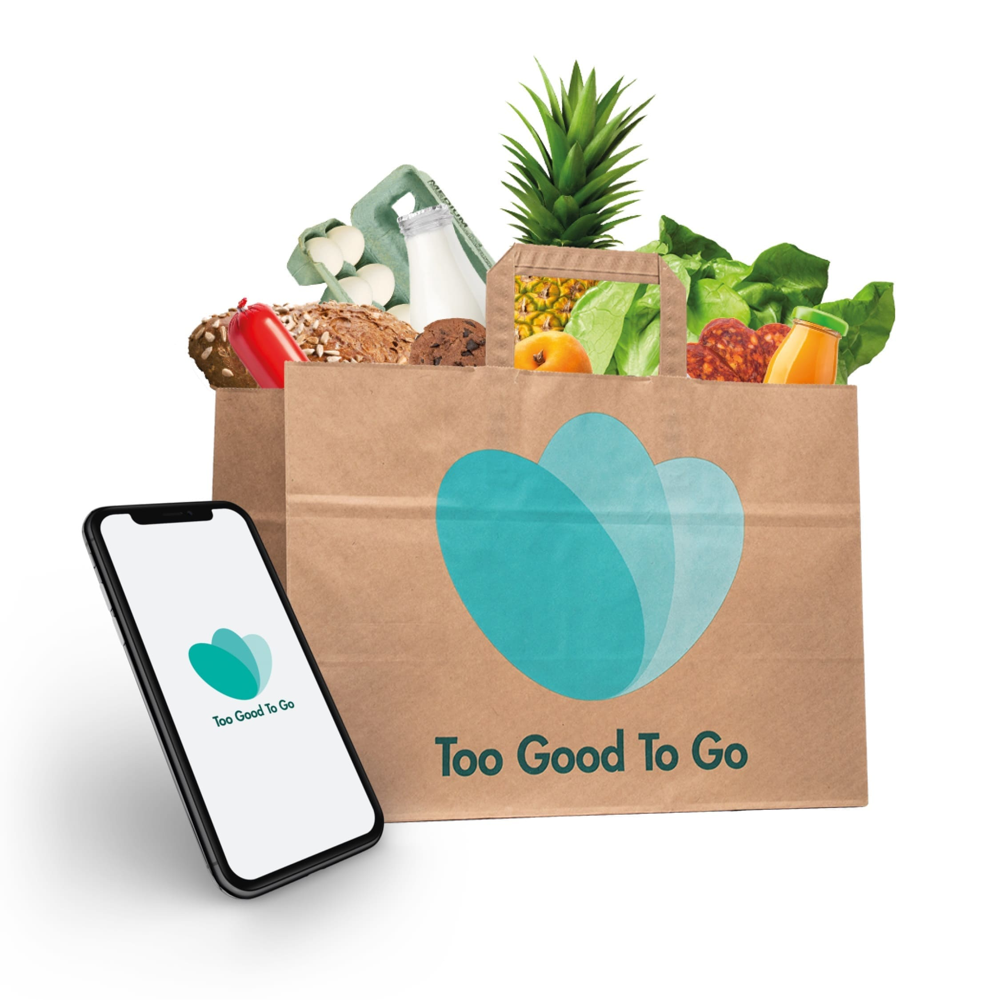
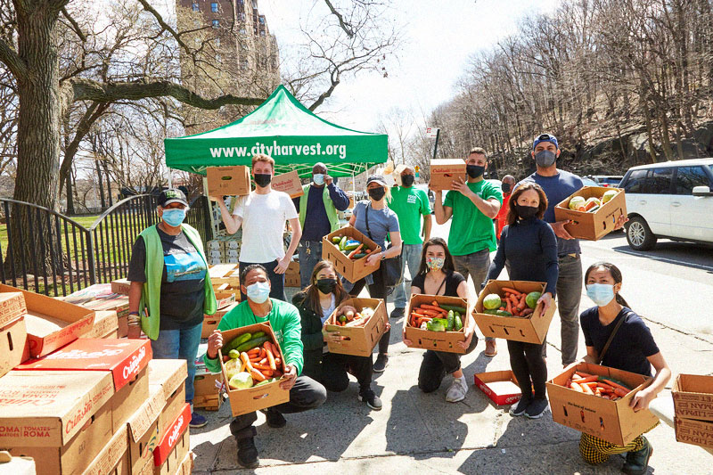
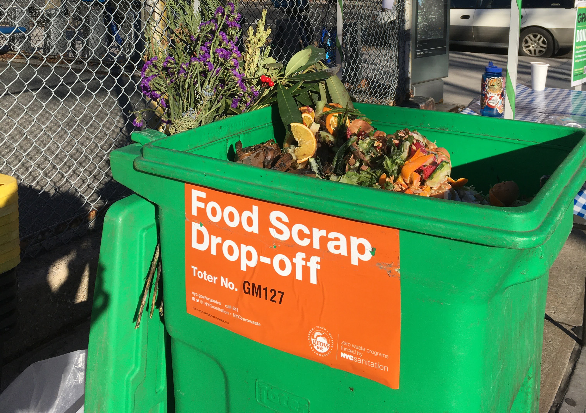

Too Good To Go
Too Good To Go is a mobile app that helps to reduce food waste by connecting consumers with local businesses who have unsold food items. Users can purchase surplus food from restaurants, cafes, supermarkets, and other food businesses at a discounted price, rather than letting it go to waste. Their mission is to create a world where food is valued and not wasted, and have won several awards for their innovative approach to reducing food waste
Learn More

City Harvest
City Harvest is a food rescue organization based in NYC that collects excess food from businesses and distributes it to people in need. It is one of the largest food rescue organizations in the world, working with community food programs and emergency food providers. City Harvest also operates Mobile Markets, which are pop-up food pantries that bring fresh produce and other healthy food options to underserved communities throughout New York City.
Learn More

GrowNYC
GrowNYC is a non-profit organization that promotes environmental community sustainability in NYC. It operates Greenmarkets, which bring locally-grown produce to the city, as well as Fresh Food Box, which is a food access program that provides affordable produce to communities with limited access to healthy food options. They also operate recycling and composting programs, and provides educational resources for students, educators, and communities to promote sustainable practices.
Learn More